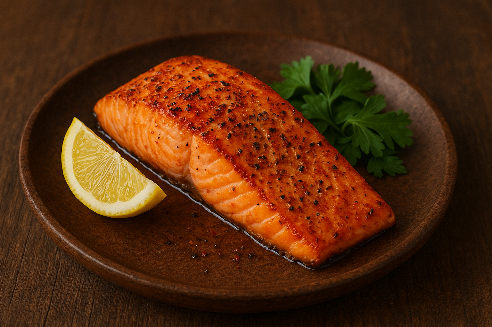

Back Home
Mjölnir Fire-Roasted Salmon
A powerful, rugged dish inspired by Thor’s hammer—bold, fiery, and smoky.

Ingredients
-
2 salmon fillets
-
2 tbsp coarse mustard
-
1 tbsp maple syrup or honey
-
1 tbsp lemon juice
-
1 tsp chili flakes
-
1 tsp black pepper
-
1 tsp sea salt
-
Fresh dill for garnish
Instructions
-
Mix mustard, maple syrup (or honey), lemon juice, chili flakes, salt, and pepper.
-
Coat the salmon fillets generously with the mixture.
-
Grill over open flame or high heat, skin-side down, for 6–8 minutes.
-
Flip briefly to char the top if desired—let it kiss the fire like Thor’s lightning.
-
Garnish with fresh dill and serve with roasted root vegetables.